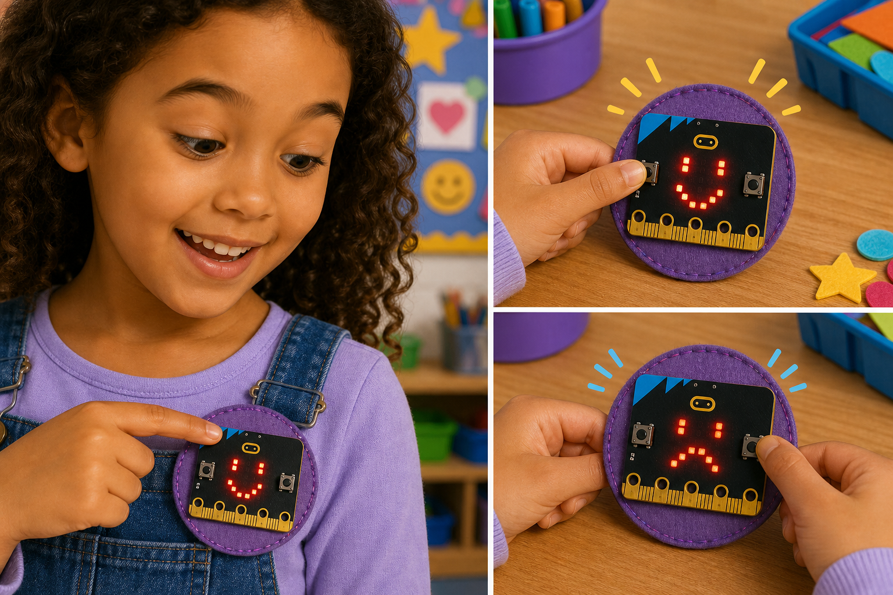
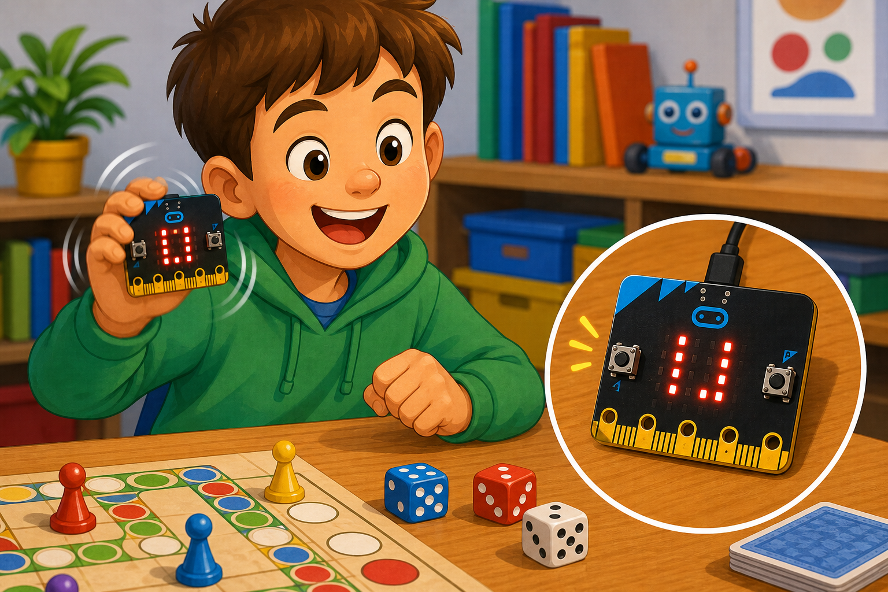

Mood badge
DetectA button is pressed
→
DecideWhich mood to show
→
DoShow a happy or sad face
The micro:bit has a 5×5 grid of 25 red LEDs on the front, called the display.
Your code can show numbers, letters, pictures, or scroll messages across it.
Each LED can be set to a brightness from 0 (off) to 9 (brightest).


from microbit import *
display.show(Image.HEART)
sleep(1000)
display.scroll("Hi!")basic.showIcon(IconNames.Heart)
basic.pause(1000)
basic.showString("Hi!")set_pixel(x, y, b) to light one LED, where x and y are 0 to 4 and b is the brightness 0 to 9.